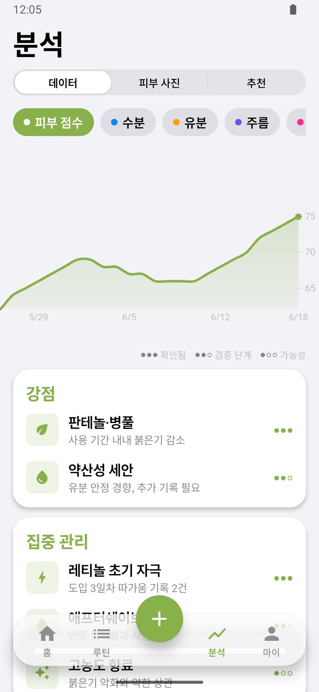
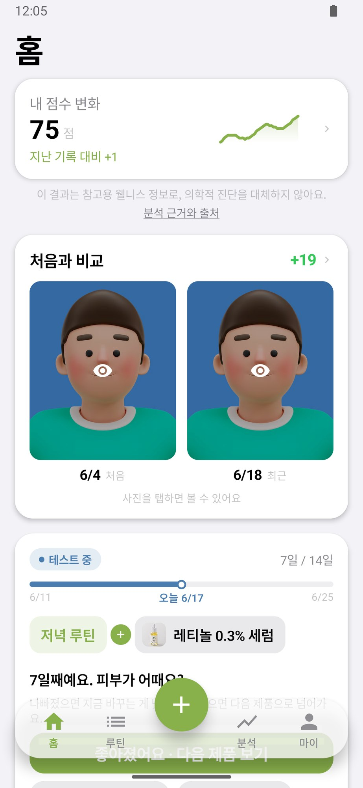
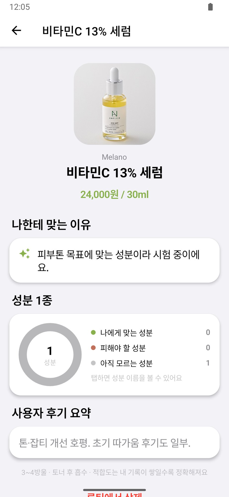
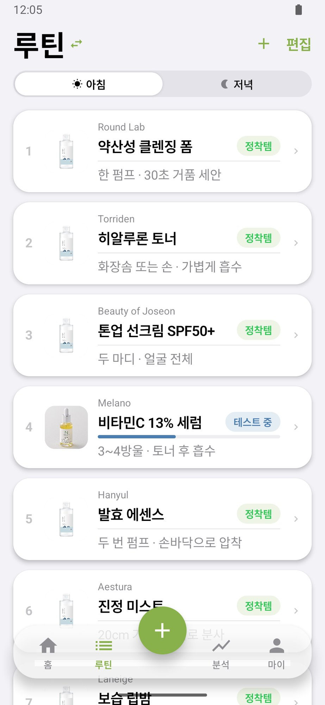

Skin Analysis
셀카 한 장으로 수분·유분·주름·피부톤·트러블·모공·홍조를 점수로 보여줍니다.
측정기 없이 휴대폰 카메라면 충분합니다.One selfie scores hydration, oil, wrinkles, tone, breakouts, pores and redness.
No device needed. Your phone camera is enough.



셀카 한 장으로 수분·유분·주름·피부톤·트러블·모공·홍조를 점수로 보여줍니다.
측정기 없이 휴대폰 카메라면 충분합니다.One selfie scores hydration, oil, wrinkles, tone, breakouts, pores and redness.
No device needed. Your phone camera is enough.
날짜별 점수가 그래프로 쌓이고, 제품을 쓰기 시작한 날과 멈춘 날이 함께 표시됩니다.
어떤 제품이 맞았는지 기록으로 확인합니다.Your scores build into a trend line, with the days you started and stopped each product marked on it.
See which products actually worked.
분석 결과와 문진, 예산을 함께 보고 루틴과 제품, 성분을 제안합니다.
추천마다 이유와 근거 신뢰도를 밝힙니다.Routines, products and ingredients picked from your results, skin survey and budget.
Every pick shows its reason and how strong the evidence is.

인기 순위와 리뷰로는 그 제품이 내 피부에 맞는지 알 수 없습니다. Cellfie는 내 피부가 실제로 어떻게 변했는지에서 추천을 시작합니다.Rankings and reviews can't tell you whether a product suits your skin. Cellfie starts from how your skin actually changed.
| 기능Feature | Cellfie | A리뷰·랭킹형 화장품 앱AReview & ranking apps | BAI 피부 분석 앱BAI skin scanner apps | C브랜드 자사 진단CBrand skin diagnosis |
|---|---|---|---|---|
| 셀카 한 장으로 항목별 피부 점수휴대폰 카메라만으로 7개 항목Skin scores from one selfie7 measures, phone camera only | ●제공Yes | —없음No | ●제공Yes | ◐일부Partly |
| 날짜별 피부 변화 기록같은 항목을 주 단위로 비교Day-by-day skin recordCompare the same measure week to week | ●제공Yes | —없음No | ◐일부Partly | —없음No |
| 제품 사용 기간과 피부 변화 연결시작·중단 시점을 그래프에 표시Product use linked to skin changeStart and stop dates on the chart | ●제공Yes | —없음No | —없음No | —없음No |
| 추천 이유와 근거 신뢰도 공개추천마다 왜 맞는지 설명A reason and evidence level for each pickWhy it suits you, every time | ●제공Yes | ◐일부Partly | —없음No | —없음No |
| 특정 브랜드에 묶이지 않는 추천자사 제품 판매 목적 없음Picks not tied to one brandWe don't sell our own products | ●제공Yes | ●제공Yes | ◐일부Partly | —없음No |
| 전성분표 촬영으로 화장대 등록성분 자동 인식, 루틴 정리Scan an ingredient list to add a productIngredients read automatically | ●제공Yes | ◐일부Partly | —없음No | —없음No |
● 제공 ◐ 일부 제공 — 제공하지 않음 · A·B·C는 국내 출시 서비스를 유형별로 묶은 것으로, 각 유형 대표 서비스의 기본 기능 기준입니다 (2026년 10월).● Yes ◐ Partly — No · A, B and C group services on the market by type. Marks reflect the core features of a typical app of each type (October 2026).
병변 개수를 기준으로 점수를 다시 계산합니다. 개수가 적은 구간의 작은 변화까지 점수에 드러납니다.Breakout scores are now based on lesion count, so small changes at low counts show up in your score.
더 정밀한 분석 모델을 운영 서버에 적용했습니다.A more precise analysis model is now live on our servers.
얼굴 사진에서는 피부 상태 점수만 계산합니다. 개인을 알아보는 얼굴 특징 정보는 추출하지도 저장하지도 않습니다.From your face photo we calculate skin condition scores only. We never extract or store facial features that could identify you.
분석이 끝나면 원본 사진을 바로 지웁니다. 전송 구간은 암호화합니다.The original photo is deleted as soon as analysis finishes. Uploads are encrypted in transit.
이용자 사진은 모델 학습, 개인 식별, 광고, 제3자 제공에 쓰지 않습니다.Your photos are never used for model training, identification or advertising, and never shared with third parties.
광고 식별자와 분석용 쿠키를 쓰지 않습니다.No advertising IDs and no analytics cookies.
Cellfie는 화장품 선택을 돕는 기록 서비스이며 의료적 진단을 하지 않습니다.Cellfie is a skin record that helps you choose skincare. It does not provide medical diagnosis.
개인정보 처리방침 전문Read the full privacy policy화장품 브랜드, 피부 연구 기관과의 협업 제안을 받습니다.We welcome proposals from skincare brands and skin research teams.